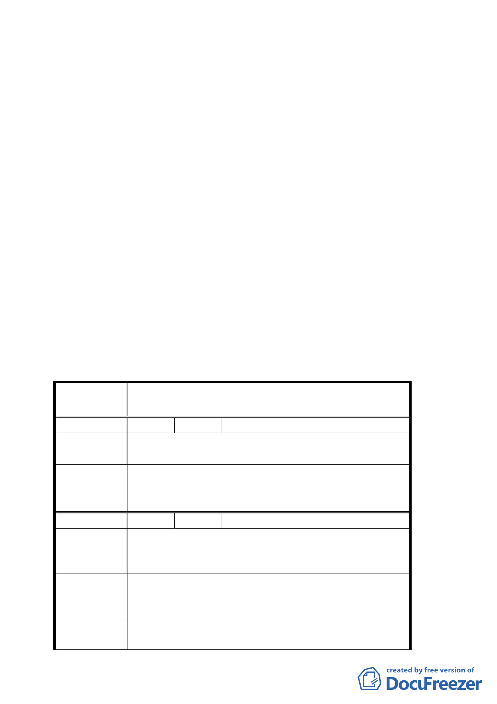

討論事項三
案名：修訂南港經貿園區特定專用區 R13 街廓容積移轉時限規定
計畫案
說明：
一、本件係市府以 95 年 12 月 21 日府都規字第 09535918703 號函
送到會，並自 95 年 12 月 22 日起公開展覽 30 天。
二、法令依據：都市計畫法第 27 條第 1 項第 3 款。
三、變更位置：詳位置圖所示。
四、變更理由及內容：詳計畫書。
五、公民或團體所提意見：詳如後附綜理表。
決議：
一、 照案通過。
二、 公民或團體所提意見審決如後附綜理表。
臺北市都市計畫委員會公民或團體所提意見綜理表
案 名 修訂南港經貿園區特定專用區 R13 街廓容積移轉時限
規定計畫案
編 號 １ 陳情人 江輝吉里長
陳情理由
本地號（南港段一小段 534 地號）係坤元宮已計畫為
綠地。
建 議 辦 法 請准列為寺廟專用區，以保存近 200 年歷史之廟宇。
委員會決議
請坤元宮所有權人洽本府文化局循文化資產指定程序
辦理。
編 號 2 陳情人 江輝吉里長
本地號（南港段一小段 526-1 地號）係 8m 計畫道路，
陳 情 理 由 計 120 ㎡之面積，持分人眾多，欲辦理容積移轉，無
法取得全體地主申請。
一、 請准部分持有人依其持分辦理容積移轉，以免使
建議辦法
部分地主喪失權益。
二、 如能排除全體之設限，地主及政府將獲双贏。
委員會決議
所提建議與內政部訂頒「都市計畫容積移轉實施辦法」
之規定相牴觸，礙難同意。
五